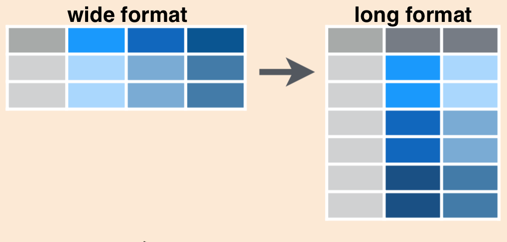

![]()
1 Introduction
The post Data cleaning, merging, and appending demonstrates data manipulation with a dplyr package (Wickham et al., 2019) and Basic plots with ggplot2 introduce plotting data using a grammar of graphics package ggplot2 (Wickham, 2016). However, before you manipulate and present your result in plots, your dataframe must be arranged in format that R can read and understand it. This post introduce and discuss an important concept in data management widely refereed to tidy.
2 Tidy data
The most common mistake made is treating spreadsheet programs like lab notebooks, that is, relying on context, notes in the margin, spatial layout of data and fields to convey information. As humans, we can (usually) interpret these things, but computers don’t view information the same way, and unless we explain to the computer what every single thing means (and that can be hard!), it will not be able to see how our data fits together. Using the power of computers, we can manage and analyze data in much more effective and faster ways, but to use that power, we have to organize our data for the computer to be able to understand it.
This is why it’s extremely important to structure well-formatted tables from the outset - before you even start entering data from your very first preliminary experiment. Data organization is the foundation of any research project. It can make it easier or harder to work with the data throughout your analysis, so it’s worth thinking about when you’re doing your data entry or setting up your experiment. You can organize and structure data in different ways in spreadsheets, but some of these choices can limit your ability to work with the data in other programs.
3 What is Tidy data？
Tidy data is a specific way of organizing data into a consistent format where each variable is a column, each row an observation, and each cell contains a single value (Figure 1). The benefits of data being tidy are myriad which include;
- Organizing datasets as tidy data makes data cleaning efforts easier
- Broad range of analytical tools are built upon the assumption to consume tidy data
- Sharing tidy data increases re-use

4 Objectives
In this post we’ll learn some tools to help make our data tidy and more coder-friendly. Those include:
- Use
tidyr::pivot_wider()andtidyr::pivot_longer()to reshape data frames janitor::clean_names()to make column headers more manageabletidyr::unite()andtidyr::separate()to merge or separate information from different columns- Detect or replace a string with
stringrfunctions
Lets first load the package we are going to use in this session
Then we use read_csv function to load a file called fao_capture.csvv from our working directory and assign as fao.capture.wt.
We’ve used read_csv() to import data from spreadsheets into R. Before we go further with the imported dataset in (fao-capture?), we need to check whether the fao.capture.wt dataset we have just loaded into our session is tidy. There are three assumptions that makes a dataset tidy, which are;
- Each variable is its its own column
- Each records is its own row, and
- Each value is in its own cell
ASFIS species | 2012 | 2013 | 2014 | 2015 | 2016 | 2017 | 2018 | 2019 |
|---|---|---|---|---|---|---|---|---|
Marine fishes nei-Osteichthyes | 137 683 | 112 095 | 110 535 | 118 078 | 118 204 | 124 895 | 109 938 | 415 031 |
Gulf menhaden-Brevoortia patronus | 500 162 | 440 709 | 385 022 | 539 198 | 618 563 | 461 189 | 529 231 | 336 221 |
Round sardinella-Sardinella aurita | 42 344 | 46 299 | 50 698 | 79 851 | 123 377 | 126 766 | 126 400 | 126 400 |
American cupped oyster-Crassostrea virginica | 77 900 | 53 866 | 57 930 | 55 041 | 44 313 | 78 961 | 49 631 | 47 723 |
Ark clams nei-Arca spp | 12 687 | 15 000 | 17 384 | 29 073 | 29 076 | 29 970 | 29 970 | 29 970 |
Stromboid conchs nei-Strombus spp | 36 855 | 36 610 | 30 691 | 34 388 | 28 774 | 35 273 | 34 856 | 28 308 |
Blue crab-Callinectes sapidus | 43 997 | 40 570 | 44 361 | 50 781 | 53 616 | 54 628 | 56 689 | 25 937 |
Yellowfin tuna-Thunnus albacares | 19 087 | 21 865 | 25 831 | 27 036 | 34487 | 29 310 | 30 966 | 24 503 |
Caribbean spiny lobster-Panulirus argus | 31 102 | 28 468 | 28 298 | 31 358 | 32 410 | 30 204 | 28 325 | 24 311 |
Atlantic seabob-Xiphopenaeus kroyeri | 36 073 | 34 243 | 25 203 | 25 322 | 30 147 | 31 319 | 31 625 | 22 497 |
Mexican four-eyed octopus-Octopus maya | 12 629 | 8 806 | 15 403 | 23 441 | 25 722 | 26 020 | 28809 | 20 119 |
A careful check of fao.capture.wt dataset presented in Table 1 and adhering to tidy assumptions, a fair question would be, is this dataset tidy? The answer is BIG NO. This is not tidy data but rather a MESSY data. We are going to look why we have given that answer that our fao.capture.wt dataset is messy!
5 Reshape from wide-to-long format
Although looking Table 1 our eyes can visually see the way the data is structured, but computers don’t view information the same way, we need to organize the data that computer can understand. If we look Table 1, we can see that the year variable is actually split over eight columns, so we’d say this is currently in wide format (?@fig-fide-long). There may be times when you want to have data in wide format, but often with code it is more efficient to convert to long format by gathering together observations for a variable that is currently split into multiple columns. Schematically, converting from wide to long format using pivot_longer() looks like this:
{# fig-fide-long}
We’ll use pivot_longer() function from dityr package (Wickham and Henry (2018)) to gather data from all years in inverts (columns 2012 to 2019) into two columns: one called year, which contains the year, another called weight containing the weight of each fish species landed and assign a name of new dataset as fao.capture.long.
The new data frame will be stored as inverts_long:
The outcome is the new long-format fao.capture.long data frame:
ASFIS species | year | wt_mt |
|---|---|---|
Gulf menhaden-Brevoortia patronus | 2014 | 385 022 |
Marine fishes nei-Osteichthyes | 2017 | 124 895 |
Stromboid conchs nei-Strombus spp | 2015 | 34 388 |
Gulf menhaden-Brevoortia patronus | 2017 | 461 189 |
Blue crab-Callinectes sapidus | 2018 | 56 689 |
Atlantic seabob-Xiphopenaeus kroyeri | 2012 | 36 073 |
American cupped oyster-Crassostrea virginica | 2014 | 57 930 |
Mexican four-eyed octopus-Octopus maya | 2017 | 26 020 |
American cupped oyster-Crassostrea virginica | 2015 | 55 041 |
Round sardinella-Sardinella aurita | 2012 | 42 344 |
Marine fishes nei-Osteichthyes | 2013 | 112 095 |
Gulf menhaden-Brevoortia patronus | 2012 | 500 162 |
Caribbean spiny lobster-Panulirus argus | 2014 | 28 298 |
American cupped oyster-Crassostrea virginica | 2013 | 53 866 |
Yellowfin tuna-Thunnus albacares | 2018 | 30 966 |
let’s use a glimpse function from dplyr package to look at the internal structure of the of the fao.capture.long format, we just created. One thing that isn’t obvious at first (but would become obvious if you continued working with this data) is that since those year numbers were initially column names (characters), when they are stacked into the year column, their class wasn’t auto-updated to numeric. Similar way, the weight are separated with a space and are treated as character instead of being numeric.
Rows: 88
Columns: 3
$ `ASFIS species` <chr> "Marine fishes nei-Osteichthyes", "Marine fishes nei-O…
$ year <chr> "2012", "2013", "2014", "2015", "2016", "2017", "2018"…
$ wt_mt <chr> "137 683", "112 095", "110 535", "118 078", "118 204",…That’s a good thing! We don’t want R to update classes of our data without our instruction. We’ll use dplyr::mutate() in a different way here: to create a new column (that’s how we’ve used mutate() in ?@sec-dplyr that has the same name of an existing column, in order to update and overwrite the existing column. In this case, we’ll mutate() to add a column called year, which contains an as.integer() version of the existing year variable:
Checking the class again, we see that year has been updated to a numeric variable:
6 Reshape from long-to-wide format
In the previous example, we had information spread over multiple columns that we wanted to gather. Sometimes, we’ll have data that we want to spread over multiple columns. For example, imagine that starting from inverts_long we want each species in the common_name column to exist as its own column. In that case, we would be converting from a longer to a wider format, and will use tidyr::pivot_wider(). Specifically for our data, we’ll use pivot_wider() to spread the common_name across multiple columns as follows:
year | Marine fishes nei-Osteichthyes | Gulf menhaden-Brevoortia patronus | Round sardinella-Sardinella aurita | American cupped oyster-Crassostrea virginica | Ark clams nei-Arca spp | Stromboid conchs nei-Strombus spp | Blue crab-Callinectes sapidus | Yellowfin tuna-Thunnus albacares | Caribbean spiny lobster-Panulirus argus | Atlantic seabob-Xiphopenaeus kroyeri | Mexican four-eyed octopus-Octopus maya |
|---|---|---|---|---|---|---|---|---|---|---|---|
2,012 | 137 683 | 500 162 | 42 344 | 77 900 | 12 687 | 36 855 | 43 997 | 19 087 | 31 102 | 36 073 | 12 629 |
2,013 | 112 095 | 440 709 | 46 299 | 53 866 | 15 000 | 36 610 | 40 570 | 21 865 | 28 468 | 34 243 | 8 806 |
2,014 | 110 535 | 385 022 | 50 698 | 57 930 | 17 384 | 30 691 | 44 361 | 25 831 | 28 298 | 25 203 | 15 403 |
2,015 | 118 078 | 539 198 | 79 851 | 55 041 | 29 073 | 34 388 | 50 781 | 27 036 | 31 358 | 25 322 | 23 441 |
2,016 | 118 204 | 618 563 | 123 377 | 44 313 | 29 076 | 28 774 | 53 616 | 34487 | 32 410 | 30 147 | 25 722 |
2,017 | 124 895 | 461 189 | 126 766 | 78 961 | 29 970 | 35 273 | 54 628 | 29 310 | 30 204 | 31 319 | 26 020 |
2,018 | 109 938 | 529 231 | 126 400 | 49 631 | 29 970 | 34 856 | 56 689 | 30 966 | 28 325 | 31 625 | 28809 |
2,019 | 415 031 | 336 221 | 126 400 | 47 723 | 29 970 | 28 308 | 25 937 | 24 503 | 24 311 | 22 497 | 20 119 |
We can see that now each species has its own column (wider format). But also notice that those column headers (since they have spaces) might not be in the most coder-friendly format…
7 Clean variable (column) names
The janitor package by Sam Firke is a great collection of functions for some quick data cleaning, like:
janitor::clean_names(): update column headers to a case of your choosingjanitor::get_dupes(): see all rows that are duplicates within variables you choosejanitor::remove_empty(): remove empty rows and/or columnsjanitor::adorn_*(): jazz up tables
Here, we’ll use janitor::clean_names() to convert all of our column headers to a more convenient case - the default is lower_snake_case, which means all spaces and symbols are replaced with an underscore (or a word describing the symbol), all characters are lowercase, and a few other nice adjustments. For example, janitor::clean_names() update ASFIS species variable name into much nicer asfis_species.
fao.capture.long = fao.capture.long |>
janitor::clean_names()
fao.capture.long |>
sample_n(size = 10) |>
flextable::flextable() |>
flextable::autofit()asfis_species | year | wt_mt |
|---|---|---|
Ark clams nei-Arca spp | 2,015 | 29 073 |
Stromboid conchs nei-Strombus spp | 2,015 | 34 388 |
Ark clams nei-Arca spp | 2,012 | 12 687 |
Round sardinella-Sardinella aurita | 2,012 | 42 344 |
Yellowfin tuna-Thunnus albacares | 2,017 | 29 310 |
Marine fishes nei-Osteichthyes | 2,019 | 415 031 |
Blue crab-Callinectes sapidus | 2,016 | 53 616 |
Atlantic seabob-Xiphopenaeus kroyeri | 2,013 | 34 243 |
Gulf menhaden-Brevoortia patronus | 2,015 | 539 198 |
Marine fishes nei-Osteichthyes | 2,012 | 137 683 |
8 Separate merged variables
Sometimes we’ll want to separate contents of a single column into multiple columns, or combine entries from different columns into a single column. For example, the fao.capture.long has a asfis_species variable, which combine an english and scientific name of the particular fish group. That variable should be separated into two variables, one variable we will call english_name and the other species. tidyr package has a function called separate that is dedicated to divide variables that are combined. For our case, a asfis_species variable can be separate with a hyphen, which was used to distinguish between an english and species names. The separate() function accepts arguments for the name of the variable to separate. You also need to specify the names of the variable to separate into, and an optional separator.
fao.capture.long.sep = fao.capture.long %>%
separate(
col = asfis_species,
into = c("english_name", "species"),
sep = "-"
)
fao.capture.long.sep|>
sample_n(size = 10) |>
flextable::flextable() |>
flextable::autofit()english_name | species | year | wt_mt |
|---|---|---|---|
Gulf menhaden | Brevoortia patronus | 2,015 | 539 198 |
Ark clams nei | Arca spp | 2,018 | 29 970 |
Mexican four | eyed octopus | 2,013 | 8 806 |
American cupped oyster | Crassostrea virginica | 2,016 | 44 313 |
Yellowfin tuna | Thunnus albacares | 2,018 | 30 966 |
Ark clams nei | Arca spp | 2,013 | 15 000 |
Ark clams nei | Arca spp | 2,012 | 12 687 |
Marine fishes nei | Osteichthyes | 2,012 | 137 683 |
Yellowfin tuna | Thunnus albacares | 2,013 | 21 865 |
Yellowfin tuna | Thunnus albacares | 2,012 | 19 087 |
9 Merge separate variables
The unite() function is the exact opposite of separate() in that it combines multiple columns into a single column. While not used nearly as often as separate() , there may be times when you need the functionality provided by unite(). For example, we use tidyr::unite() to combine the variable english_name and english_name to form common_species, and separate them with a hyphen - symbol between the two variables and assign the output as fao.capture.long.merge.
fao.capture.long.merge = fao.capture.long.sep |>
unite(
col = "common_species", # What to name the new united column
c(english_name, species), # The columns we'll unite (site, year)
sep = "-" # How to separate the things we're uniting
)
fao.capture.long.merge|>
sample_n(size = 10) |>
flextable::flextable() |>
flextable::autofit()common_species | year | wt_mt |
|---|---|---|
Gulf menhaden-Brevoortia patronus | 2,013 | 440 709 |
Atlantic seabob-Xiphopenaeus kroyeri | 2,016 | 30 147 |
Ark clams nei-Arca spp | 2,014 | 17 384 |
Blue crab-Callinectes sapidus | 2,018 | 56 689 |
Caribbean spiny lobster-Panulirus argus | 2,017 | 30 204 |
Marine fishes nei-Osteichthyes | 2,016 | 118 204 |
Gulf menhaden-Brevoortia patronus | 2,015 | 539 198 |
Stromboid conchs nei-Strombus spp | 2,014 | 30 691 |
Blue crab-Callinectes sapidus | 2,016 | 53 616 |
Yellowfin tuna-Thunnus albacares | 2,017 | 29 310 |
10 Replace a pattern
One thing we noticed in the dataset we imported is that the weight are not in numeric but rather as character. The reason for that is simple because for eye to read long numbers easily, we often separate a thousand with comma or space, which is the case for the data we loaded. though the eye can easily see and distinguish the numbers, that is hard computers can understand, as a key issue in tidying is that a cell should contain a single value. Therefore, since this weigh is in character format, there is nothing we can do to get any statistic values unless we convert them into numeric format. That’s simple and straight forward as R has a as.numeric function that convert character into numeric format values. Unfortunate, we do not get the numeric as we expected but instead we are given an NA values, which simply indicate that process isn’t fit for that value of the data type.
fao.capture.long |>
mutate(wt_mt = as.numeric(wt_mt))|>
sample_n(size = 10) |>
flextable::flextable() |>
flextable::autofit()asfis_species | year | wt_mt |
|---|---|---|
Ark clams nei-Arca spp | 2,016 | |
Stromboid conchs nei-Strombus spp | 2,016 | |
Yellowfin tuna-Thunnus albacares | 2,015 | |
Marine fishes nei-Osteichthyes | 2,016 | |
Caribbean spiny lobster-Panulirus argus | 2,019 | |
Round sardinella-Sardinella aurita | 2,017 | |
Mexican four-eyed octopus-Octopus maya | 2,018 | 28,809 |
Marine fishes nei-Osteichthyes | 2,018 | |
Round sardinella-Sardinella aurita | 2,019 | |
Stromboid conchs nei-Strombus spp | 2,014 |
When you face that situation, you must keen look at the internal structure of the dataset to understand what lies behind the problem you encounter. Using a glimpse function, we notice the wt_mt variable is character format with number values, but why does the values fail to convert to numeric the answer is simple–presence of space to separate the values into thousands. We must get rid of the space before we convert the character into numeric values.
Rows: 88
Columns: 3
$ asfis_species <chr> "Marine fishes nei-Osteichthyes", "Marine fishes nei-Ost…
$ year <int> 2012, 2013, 2014, 2015, 2016, 2017, 2018, 2019, 2012, 20…
$ wt_mt <chr> "137 683", "112 095", "110 535", "118 078", "118 204", "…A stringr package has several function that works well with strings values in R. Among these function is str_remove(), which remove a specified string pattern. In our case we remove a space in wt_mt variable and assign the variable name as wt_mt_free
A glimpse of the fao.capture.long.free indicate that a wt_mt_free variable we just created has no spaces to separate values into thousands.
Rows: 88
Columns: 4
$ asfis_species <chr> "Marine fishes nei-Osteichthyes", "Marine fishes nei-Ost…
$ year <int> 2012, 2013, 2014, 2015, 2016, 2017, 2018, 2019, 2012, 20…
$ wt_mt <chr> "137 683", "112 095", "110 535", "118 078", "118 204", "…
$ wt_mt_free <chr> "137683", "112095", "110535", "118078", "118204", "12489…Therefore, once we have removed space in the values, the variable is in the format the R will understand that this is values and can easily convert from character into numeric with as.numeric function;
fao.capture.long.free = fao.capture.long.free |>
mutate(wt_mt = as.numeric(wt_mt_free)) |>
select(-wt_mt_free)
fao.capture.long.free|>
sample_n(size = 10) |>
flextable::flextable() |>
flextable::autofit()asfis_species | year | wt_mt |
|---|---|---|
Mexican four-eyed octopus-Octopus maya | 2,017 | 26,020 |
Ark clams nei-Arca spp | 2,012 | 12,687 |
Atlantic seabob-Xiphopenaeus kroyeri | 2,019 | 22,497 |
American cupped oyster-Crassostrea virginica | 2,018 | 49,631 |
Atlantic seabob-Xiphopenaeus kroyeri | 2,016 | 30,147 |
Caribbean spiny lobster-Panulirus argus | 2,014 | 28,298 |
Caribbean spiny lobster-Panulirus argus | 2,018 | 28,325 |
Caribbean spiny lobster-Panulirus argus | 2,017 | 30,204 |
Yellowfin tuna-Thunnus albacares | 2,019 | 24,503 |
Marine fishes nei-Osteichthyes | 2,018 | 109,938 |
11 summary
The ultimate of tidy dataset is in the analysis and plotting. When the dataset is in the right format, it makes advanced analysis easy and smooth while exploring the data and expose the inherited pattern is also much easier. This is because the tools in many programming languages and database require tidy structure. For example, Figure 2 is the result of tidy dataset that allows to compute the mean and standard deviation and then use the metric computed to make a plot. We will cover ploting in much detail in ?@sec-ggplot.
##| echo: true
#|
fao.capture.long.free %>%
separate(col = asfis_species,
into = c("name", "species"),
sep = "-") %>%
group_by(species) %>%
summarise(
mean_wt = mean(wt_mt, na.rm = TRUE),
std = sd(wt_mt, na.rm = TRUE)
) %>%
arrange(mean_wt) %>%
ggplot(aes(x = reorder(species, mean_wt), y = mean_wt))+
geom_point(size = 3)+
geom_errorbar(aes(ymin = mean_wt+std,
ymax = mean_wt - std),
width = .5)+
scale_y_continuous(name = "Landed Weight (MT)",
position = "right",
breaks = scales::pretty_breaks(n = 5),
labels = scales::label_number(big.mark = ","))+
scale_x_discrete(name = "Species")+
coord_flip() +
theme_bw(base_size = 12)+
theme(panel.grid = element_blank(), axis.text.y = element_text(face = "italic"))12 References
Citation
@online{semba2024,
author = {Semba, Masumbuko},
title = {Tidying {Data} Frame},
date = {2024-04-29},
url = {https://lugoga.github.io/kitaa/posts/tidying/},
langid = {en}
}